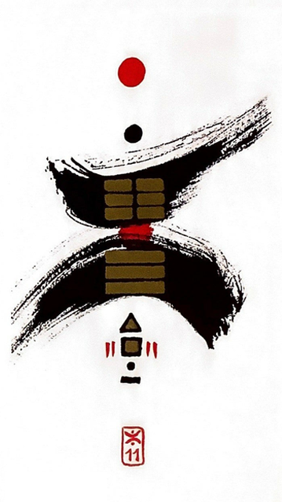

지천태(클 태.태평할 태)
대길 1
(내사랑 천태씨~)
사귐이 이루어져 번창하다완벽한 조화와 균형을 이룬 만사형통.태평성대다하늘과 땅이 서로의 기운을 교환하고 통하여결실과 화합을 이룬 상황을 표현한 그림
크게 통한다.크게 번성.태평하다.찰떡궁합.만사형통.조화.일치.균형.완벽.좋은 조건.좋은 경관.확장.결실.성공.천생연분
연애운
찰떡궁합.천생연분.결혼운.임신 가능
사업운
계획했던 일이 성공.명예.재물적인 보상.만족
속마음
썸완전히 맘에 든다.이상형.진정성을 가지고 사귀고 싶은 마음
1년 이상열렬한 사랑.너무 사랑하고 소통도 잘되는 마음
이별 후너무 그리워하고 재회하고 싶은 간절한 마음
솔로연애운
좋은 인연 생긴다
건강운
양호하다. 환자는 회복